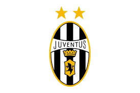

Sporting Lisbon

This club gave chance to a youngester who is a Legend now. The First club where Christiano Ronaldo Played. After then he signed with Manchester United.
Manchester United

"The Greatest Manger Of All Time" Sir Alex Ferguson is also belived by Ronaldo himself as his football father.
Juventus
All I remember is Ronaldo's Hattrick against Athletico and Ronaldo's bond with Dybala. His rival Manjukich was there too.